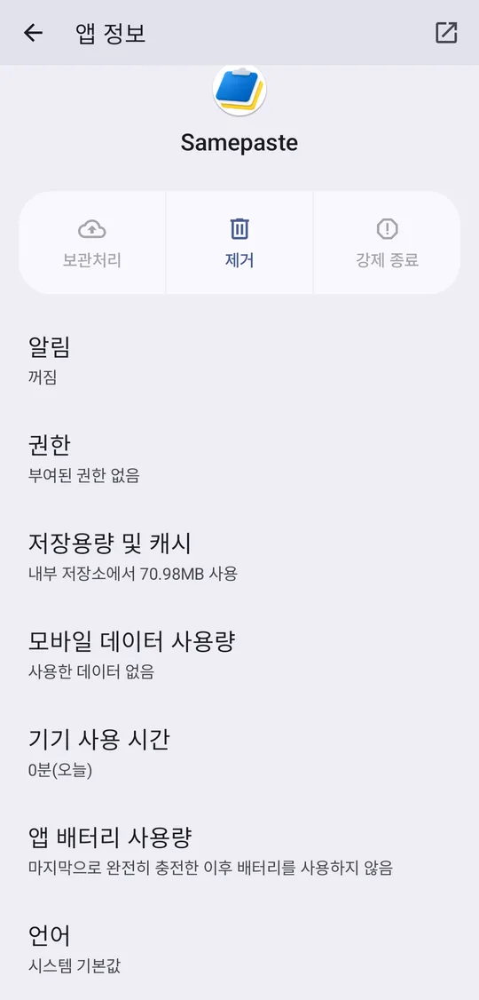
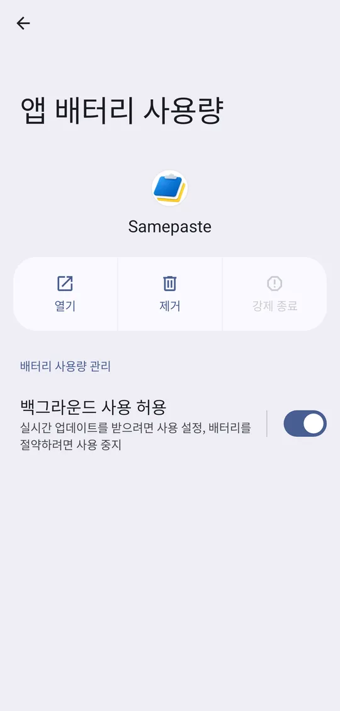
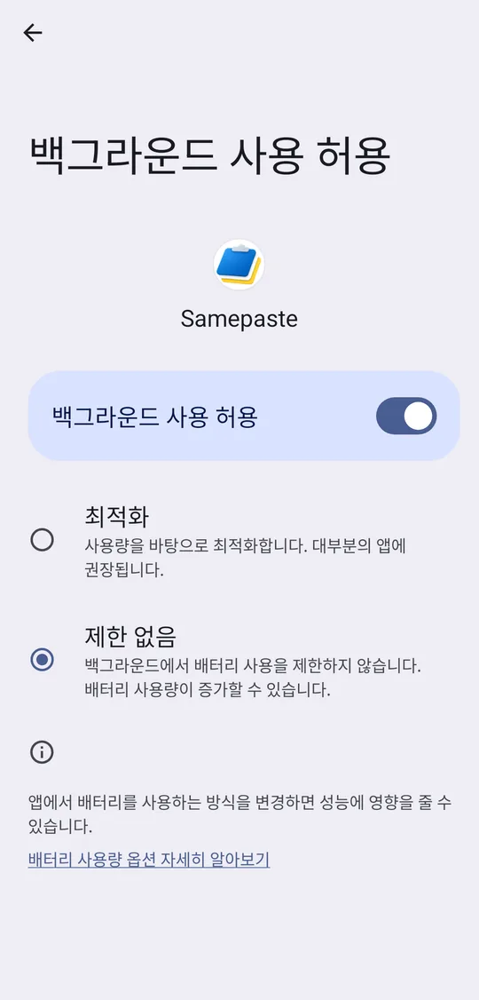

폰 화면이 꺼지면 클립보드 공유가 멈출 때
PC에서 복사한 게 폰을 켜 둘 때는 잘 오는데, 화면이 꺼지고 조금 지나면 안 와요. 폰을 다시 켜고 앱을 열면 그제야 몰려 오거나, 아예 안 와요.
고장이 아니에요. 안드로이드는 화면이 꺼진 동안 배터리를 아끼려고 오래 안 쓴 앱을 재우거나 멈춰요. 클립보드 공유 앱은 화면이 꺼져 있어도 깨어 있어야 하니, 그 앱 하나만 배터리 제한을 풀어 주면 돼요. Windows와 연결, KDE Connect, 다른 공유 앱도 같아요.
“Currently it either gets stuck halfway through or doesn’t send at all if the phone is idle.”
reddit r/androidapps“Background service automatically turned off after about 1hour ... Due to this clipboard is not syncyed.”
Google Play 리뷰 (Clip Cloud)해 볼 순서
그 앱의 ‘앱 정보’를 열어요
홈 화면이나 앱 서랍에서 공유 앱 아이콘을 길게 누르고 ⓘ(앱 정보)를 눌러요. 설정 › 앱 › 앱 모두 보기 › 그 앱으로 가도 같아요.

‘앱 배터리 사용량’ › ‘백그라운드 사용 허용’ 글자를 눌러요
스위치가 아니라 ‘백그라운드 사용 허용’이라는 글자를 눌러야 다음 화면으로 가요. 스위치를 끄면 오히려 화면이 꺼진 동안 아무것도 못 해요.

‘제한 없음’을 골라요
‘최적화’(기본)는 화면이 꺼지면 앱을 재울 수 있어요. ‘제한 없음’이면 화면이 꺼져 있어도 받을 수 있어요. 이 앱 하나만 바뀌고, 다른 앱은 그대로 아껴요.

갤럭시라면
앱 정보에서 ‘배터리’를 누르면 ‘제한 없음’이 바로 있어요.
갤럭시는 이것과 따로, 한동안 안 연 앱을 절전 상태로 보내요. 설정 › 디바이스 케어 › 배터리 › 백그라운드 앱 사용 제한에서 그 앱이 ‘절전 상태 앱’이나 ‘초절전 상태 앱’에 들어 있으면 빼고, ‘자동 절전 예외 앱’에 넣어요.
그래도 멈추면
몇몇 제조사는 이것 말고도 앱을 끄는 장치를 따로 둬요. dontkillmyapp.com에서 내 폰 제조사를 찾으면 그 회사 메뉴 이름으로 된 길이 있어요.
최근 앱 화면에서 그 앱을 쓸어 없애면 일부 폰은 앱을 완전히 꺼요. 공유 앱은 쓸어 없애지 마세요.
Samepaste는 처음 켤 때 이 설정을 먼저 물어보고, 나중에 다시 막히면 앱 첫 화면에 무엇을 누르면 되는지 보여 줘요.